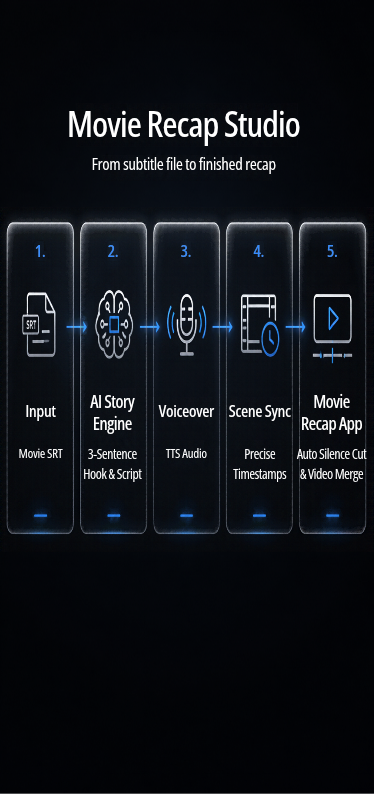

Turn Full Films into Viral Recaps in Minutes.
The ultimate studio system designed for YouTube & TikTok recap creators. Ingest entire movie SRT subtitles, generate high-retention 3-sentence hooks, align voiceover audio waveforms, and export millisecond-precise cut timestamps.
Architectural Blueprint
Flawless End-to-End Workflow
From raw film subtitle stream to synchronized timeline ranges ready for direct video cutting.

Extracts characters, acts, plot turning points, and timestamps from complete SRT files.
Generates a high-tension 3-sentence hook (0-15s) with 135-145 wpm retention pacing.
Analyzes spoken TTS audio cadence and matches speech timecodes to subtitle events.
Produces pristine cut ranges ready for Movie Recap desktop/mobile slicing.
Multi-Platform Ecosystem
Core Downloads Hub
Equip your production workflow with the universal agent skill or standalone desktop & mobile companion editors.
Universal AI Agent Skill
movie-recap-studio-claude-skill.zip • v2.4.0
Drop into Claude Code, Gemini CLI, OpenAI ChatGPT, or Codex. Ingests full movie SRTs, creates viral 3-sentence hooks, and maps spoken audio to film timecodes.
- Cross-agent spec (.agents, .claude, .gemini)
- Story & viral hook retention engine
- TTS waveform-to-SRT timestamp mapper
- Lightweight (15 KB), zero dependencies
Movie Recap for Windows
MovieRecap-Setup.exe • v2.4.0
Native high-throughput editing software for Windows. Paste timestamp ranges directly from the skill, preview multi-track audio, and batch slice scenes at GPU speeds.
- Direct timestamp paste & auto-trim
- Hardware GPU accelerated video slicing
- Multi-track voiceover & subtitle timeline
- Supports 4K, 1080p MKV, MP4, WebM
Movie Recap for Android
MovieRecap.apk • v2.4.0
Create and inspect short-form viral recaps on the move. Built for fast 9:16 TikTok, Reels, and YouTube Shorts extraction with instant preview.
- 9:16 Vertical crop & auto-framing
- On-device timestamp preview player
- Direct export to YouTube Shorts & Reels
- Ultra-lightweight APK for Android 8.0+
Autonomous Pipeline
How It Works in 4 Steps
From raw subtitle file to viral recap video ready for publishing.
Story & Subtitle Ingestion
AI reads and structures the entire film in seconds
Drop your raw movie subtitle file (.srt) into Claude, ChatGPT, or Gemini. The skill parses chronological dialogue beats, detects character motivations and turning points, and suggests 2–3 focused storytelling angles.
Retention Narration Scripting
Engineered for 70%+ audience watch time
The AI writes a transformational script using the proprietary 3-Sentence Curiosity Hook (Curiosity + Extreme Stakes + Dilemma). Every beat maintains a punchy 135–145 wpm cadence with natural suspense connectors.
Audio Calibration & Scene Sync
Dialogue-grounded frame-accurate cut marks
Generate your voiceover with ElevenLabs, Edge-TTS, or OpenAI audio. The agent analyzes actual spoken audio timing and re-reads the movie SRT to output frame-accurate source timestamp ranges for every spoken line.
1-Click Assembly & Silence Removal
Render master video in Windows or Android app
Paste the timestamp list into the Movie Recap app. It trims the clips, automatically strips out dead pauses over 0.3s for rapid momentum, replaces film audio with your voiceover, and exports 1080p or 4K video.
Competitive Edge
Why Movie Recap Studio Outperforms Everything Else
Traditional editing takes 8+ hours. Generic AI tools hallucinate fake stock clips. We deliver authentic cinema precision.
| Capability | Manual Editing | Generic AI Tools | Movie Recap Studio |
|---|---|---|---|
| Script Creation Time | 4–6 hours of tedious note-taking | Generic summaries with made-up facts | < 3 mins (Grounded in movie SRT) |
| Visual Scene Accuracy | Manual scrubbing across 2 hours | Random unrelated stock clips | Exact frame-accurate movie timestamps |
| Dead Pause Removal | Painful manual ripple editing | Unnatural robotic cadence | Auto cut >0.3s dead pauses instantly |
| Copyright Protection | High risk of audio bleed & long clips | Risk of unlicensed stock assets | Transformational Fair Use (Auto-muted audio) |
| Platform Flexibility | Tied to heavy $300+/yr desktop NLEs | Locked in closed web SaaS dashboards | Universal Skill + Windows + Android |
| Cost & Subscription | Expensive software licenses | $30–$100/mo recurring tokens | 100% Free & Open Source ($0 forever) |
Creator Community
Trusted by Top Video Creators
From 100K to 1M+ subscriber channels, creators use Movie Recap Studio to accelerate production and boost viewer retention.
"I used to spend 8 hours scrubbing timelines to find scenes that matched my voiceover. Movie Recap Studio cut that to 15 minutes. Our channel retention jumped from 41% to 67% in our very first week."

"The Hindi/Urdu storytelling flow is exceptional. It captures suspense perfectly without sounding like a robotic translation. The Windows app auto-deleting dead pauses alone saved my editor 20 hours a month."

"The biggest superpower is that it reads the actual SRT file. There are no hallucinations, no fake scenes that don't exist in the film. When it gives you a timestamp, the visual is right there."

"The Android app is fantastic for daily Shorts. I drop timestamps in, it trims clips with 9:16 framing, and I publish three videos a day straight from my phone. Incredible that this is 100% free."

"Every other recap tool charges $50/mo for a handful of credits and delivers terrible generic stock videos. Movie Recap Studio is open source, works inside Claude, and gives total control over real footage."

"The combination of the Claude skill and Windows desktop app is lightning in a bottle. We went from releasing 2 recaps a week to daily high-retention uploads with zero burnout."

100% Free & Open Source
Transparent Community Pricing
No subscriptions, no credits, no paywalls. Built for creators by creators.
Starter
Essential for solo creators and hobbyists learning the AI movie recap production workflow.
- Universal AI Agent Skill for Claude, ChatGPT & Gemini
- Full SRT subtitle story analysis & chapter indexing
- Viral 3-Sentence Curiosity Hook formula
- Frame-accurate timestamp ranges output
- MIT Open Source License
Pro Creator
For serious YouTube & Shorts creators who need maximum editing speed, GPU acceleration, and audio sync.
- Everything in Starter included
- Movie Recap Windows Desktop Application (.exe)
- Auto-Silence Stripper cuts dead pauses >0.3s
- 1-Click Clipboard timestamp range importer
- Hardware-accelerated GPU export (NVENC / QuickSync)
- 16:9 Longform & 9:16 Shorts export presets
Studio Agency
For multi-channel teams, editing agencies, and daily vertical Shorts content machines.
- Everything in Pro Creator included
- Movie Recap Android Mobile APK (.apk)
- Mobile-first vertical cutting for TikTok & Shorts
- Multi-channel batch production workflow
- Commercial usage with zero royalty obligations
Got Questions?
Frequently Asked Questions
Everything you need to know about the skill, companion apps, and licensing.